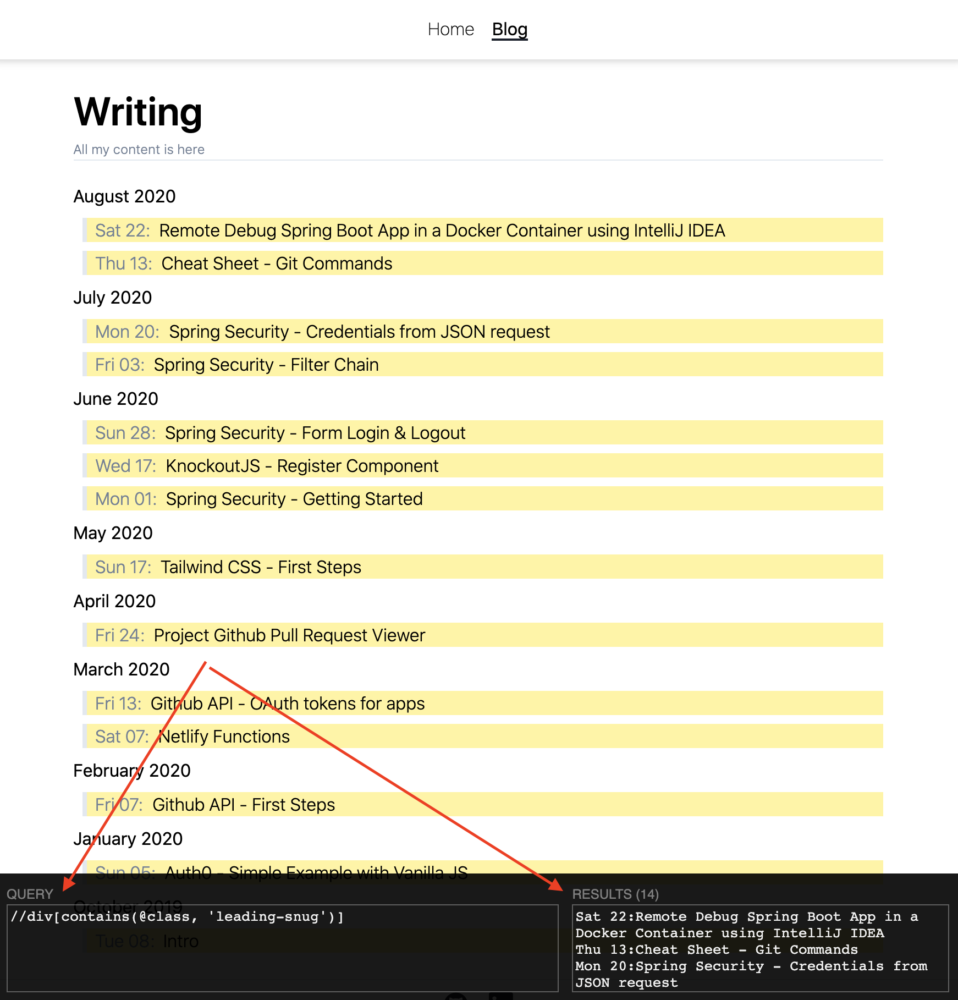

Date: 2020-09-30
I wanted to explore how easy is to extract elements from HTML files or directly from website URLs programatically using Java. I found a third party library that gave me the desired results without much difficulties.
It's XSoup.
With XPath expressions it is able to select the elements within the HTML using Jsoup as HTML parser.
In the example below, it extracts the posts of this website using the URL (https://ckinan.com/blog) , or reading the html of that exact url but downloaded into the repository.
Repo: https://github.com/ckinan/java-practice/tree/master/parse-html
We got:
App.java to place our logicpom.xml file: XSoupI tried to explain the code with the docstrings and comments there to point out what the lines and methods are supposed to do.
package com.ckinan;
import org.jsoup.Jsoup;
import org.jsoup.nodes.Document;
import org.jsoup.nodes.Element;
import us.codecraft.xsoup.Xsoup;
import java.io.*;
import java.nio.file.Files;
import java.nio.file.Paths;
import java.util.ArrayList;
import java.util.List;
import java.util.stream.Collectors;
/**
* Code snippet to find elements within a html (from file and url) using XPath.
*
* It uses a third party library called XSoup. Links:
* - mvn repository: https://mvnrepository.com/artifact/us.codecraft/xsoup
* - github repository: https://github.com/code4craft/xsoup
*
* This example reads a list of blog posts using a fixed XPath expression and prints the results in the console.
* */
public class App {
public static final String XPATH_BLOG_POST = "//div[contains(@class, 'leading-snug')]";
/**
* The method main of the program. It starts and orchestrates the process.
* It gets instances of Documents from specific sources and sends them to read specific elements
* by xpath expression.
*
* It retrieve documents from:
* - Files (by specifying the full path)
* - URL (of the website to be parsed)
*
* @param args
* Arguments of our application. Won't be used at all
* @throws java.io.IOException
*/
public static void main(String[] args) throws IOException {
// Calling the static methods that will get an instance of the HTML document and then evaluate
// the XPath expression to get a list of Blog Posts. First with a HTML file, then do the same with the website
// URL directly.
Document doc1 = App.getDocumentFromFile("src/main/resources/blog.html");
List<String> postsFromFile = App.readDocument(doc1, App.XPATH_BLOG_POST);
System.out.println(postsFromFile);
Document doc2 = App.getDocumentFromUrl("https://ckinan.com/blog");
List<String> postsFromUrl = App.readDocument(doc2, App.XPATH_BLOG_POST);
System.out.println(postsFromUrl);
}
/**
* Read the content file of the given full path using "collect" from Stream Java 8+.
*
* Refs:
* - https://docs.oracle.com/javase/8/docs/api/java/nio/file/Paths.html#get-java.lang.String-java.lang.String...-
* - https://docs.oracle.com/javase/8/docs/api/java/nio/file/Files.html#lines-java.nio.file.Path-
* - https://docs.oracle.com/javase/8/docs/api/java/util/stream/Stream.html#collect-java.util.stream.Collector-
*
* Then it uses Jsoup to parse the content file into a Document instance.
*
* @param fullPath
* The full path of the file to be read and parsed using Jsoup.
* @throws java.io.IOException
*
* @return The parsed document which contains all the elements of the HTML file
*/
public static Document getDocumentFromFile(String fullPath) throws IOException {
System.out.println("Reading document from file: " + fullPath);
// Read the content file using Java 8+ Streams.
String html = Files.lines(Paths.get(fullPath)).collect(Collectors.joining(System.lineSeparator()));
return Jsoup.parse(html);
}
/**
* Read the content of the given website url using Jsoup
*
* @param url
* The URL of the website HTML to be read and parsed using Jsoup.
*
* @throws java.io.IOException
*
* @return The parsed document which contains all the elements of the HTML file
*/
public static Document getDocumentFromUrl(String url) throws IOException {
System.out.println("Reading document from url: " + url);
return Jsoup.connect(url).get();
}
/**
* Evaluates the given XPath expression on the given Document which is limited to assume that it's a list of
* Elements right now. Returns results of the XPath evaluation.
*
* @param doc
* The URL of the website HTML to be read and parsed using Jsoup.
*
* @param xpath
* The URL of the website HTML to be read and parsed using Jsoup.
*
* @throws java.io.IOException
*
* @return The list of string values resulted from the XPath expression.
*/
public static List<String> readDocument(Document doc, String xpath) {
List<String> result = new ArrayList<>();
// It first extract the Element instances of the html content using the given Document and the XPath expression
// Note: Xsoup uses Jsoup as the HTML parser. Xsoup "evaluates" a Document which is an instance variable created
// by Jsoup
List<Element> elements =
Xsoup.compile(xpath).evaluate(doc).getElements();
for(Element e: elements) {
// Each Element object has multiple properties available to be extracted, for example the HTML tag name.
// For this code snipped, we are interested into extract the text of the element.
// Example: <p>Hello world</p> -> e.text() would return "Hello world"
result.add(e.text());
}
return result;
}
}
<dependencies>
<!-- https://mvnrepository.com/artifact/us.codecraft/xsoup -->
<dependency>
<groupId>us.codecraft</groupId>
<artifactId>xsoup</artifactId>
<version>0.3.1</version>
</dependency>
</dependencies>
Run the App.java class, and it should get this printed in the Console:
Reading document from file: src/main/resources/blog.html
[Sat 22:Remote Debug Spring Boot App in a Docker Container using IntelliJ IDEA, Thu 13:Cheat Sheet - Git Commands, Mon 20:Spring Security - Credentials from JSON request, Fri 03:Spring Security - Filter Chain, Sun 28:Spring Security - Form Login & Logout, Wed 17:KnockoutJS - Register Component, Mon 01:Spring Security - Getting Started, Sun 17:Tailwind CSS - First Steps, Fri 24:Project Github Pull Request Viewer, Fri 13:Github API - OAuth tokens for apps, Sat 07:Netlify Functions, Fri 07:Github API - First Steps, Sun 05:Auth0 - Simple Example with Vanilla JS, Tue 08:Intro]
Reading document from url: https://ckinan.com/blog
[Sat 22:Remote Debug Spring Boot App in a Docker Container using IntelliJ IDEA, Thu 13:Cheat Sheet - Git Commands, Mon 20:Spring Security - Credentials from JSON request, Fri 03:Spring Security - Filter Chain, Sun 28:Spring Security - Form Login & Logout, Wed 17:KnockoutJS - Register Component, Mon 01:Spring Security - Getting Started, Sun 17:Tailwind CSS - First Steps, Fri 24:Project Github Pull Request Viewer, Fri 13:Github API - OAuth tokens for apps, Sat 07:Netlify Functions, Fri 07:Github API - First Steps, Sun 05:Auth0 - Simple Example with Vanilla JS, Tue 08:Intro]
Something uselful to "test" the XPath expression to see if it's a valid one or if will work, it is this chrome extension: XPath Helper. For the above example I introduced the XPath expression //div[contains(@class, 'leading-snug')] and ensure the results made sense.

There might be another way to accomplish the same thing I did with Xsoup, the github repo seems not to be pretty active lately (last commit was on Jan-2016 - at least this is what Github tells me).
But, I needed an XPath selector, and Xsoup worked well and without a lot of boilerplate, just like what I was looking for. So thanks Xsoup!